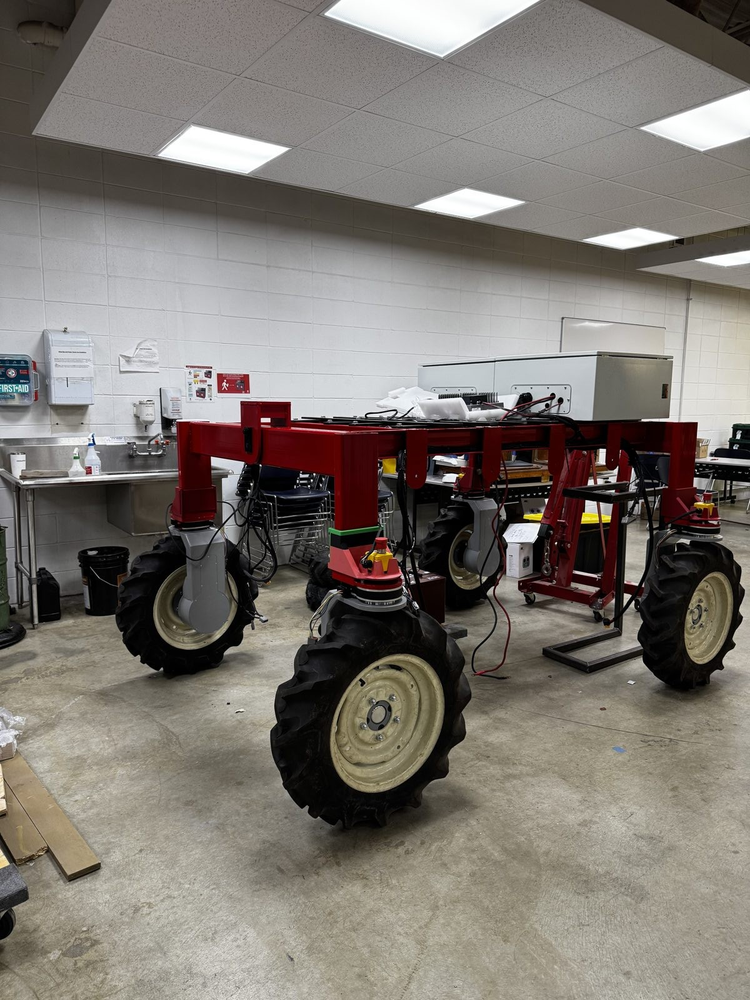
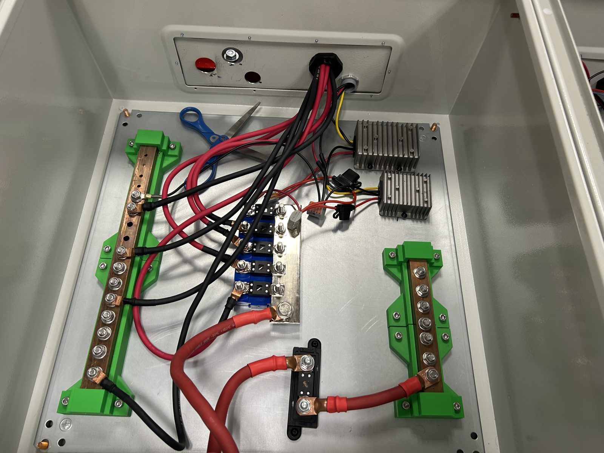

01 — OVERVIEW
An electric research tractor for agricultural data collection
FlexRoE is an autonomous electric tractor envisioned by Professor Santosh Pitla, built as a research platform to support agricultural research programs and to collect large-scale data directly from working farms. My role was on the electrical and embedded systems side: getting operator commands from a receiver to the drive motors reliably, and building in the hardware needed to stop the rover safely when something goes wrong.

FLEXROE CHASSIS — FOUR INDEPENDENT WHEEL MOTOR PODS, ELECTRONICS ENCLOSURE MOUNTED ON TOP
02 — WHAT I WORKED ON
Command path, E-stop hardware, and full system wiring
-
Receiver-to-command firmware
Using an STM32 development board, I wrote a program in C with the HAL library to process incoming data from a receiver and translate it into simple commands for the main computer.
-
CAN bus motor control
The main computer relayed those commands onto a CAN bus, which told each drive motor where to turn.
-
E-stop proto board
I assisted in developing a proto board that used optocouplers and relays to detect mechanical limit stops and trigger emergency stops from the main computer.
-
System integration
I built the connectors to wire the full electrical system together, then tested and verified the system end to end.
STM32C / HALCAN busOptocouplers & relaysElectrical wiringConnector fabrication
03 — ELECTRICAL SYSTEM
Power distribution and E-stop hardware
The enclosure below houses the rover's power distribution: bus bars splitting main power to each wheel pod, current sensors on the mid rail, and the two DC-DC converters that step power down for the low-voltage electronics. This is the wiring I built and terminated, connecting the battery input through to the drive electronics and the E-stop circuitry.

POWER DISTRIBUTION ENCLOSURE — BUS BARS, CURRENT SENSORS, AND DC-DC CONVERSION